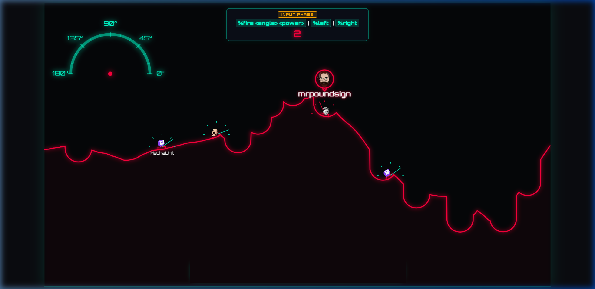
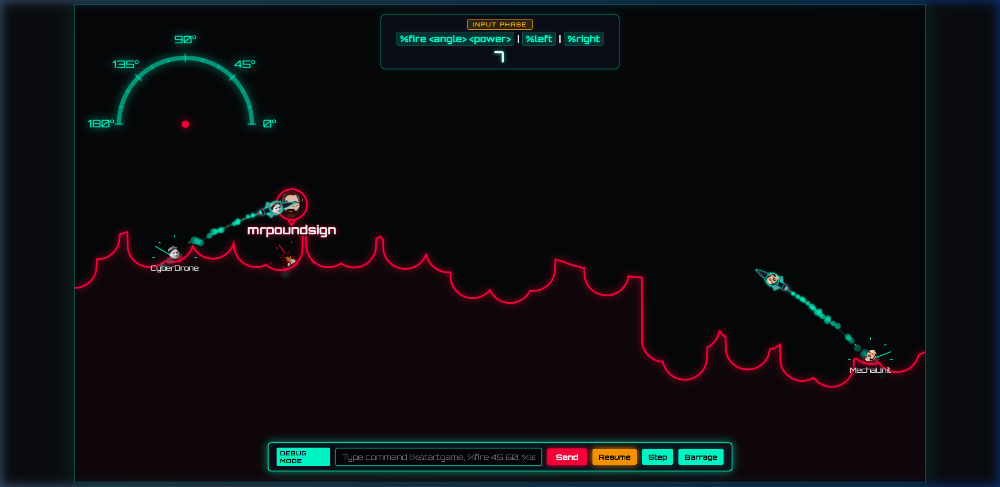
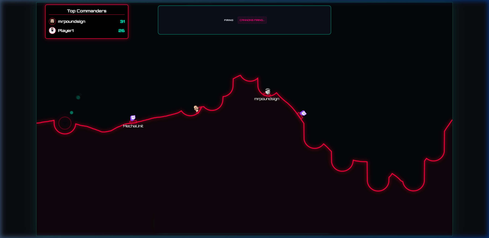
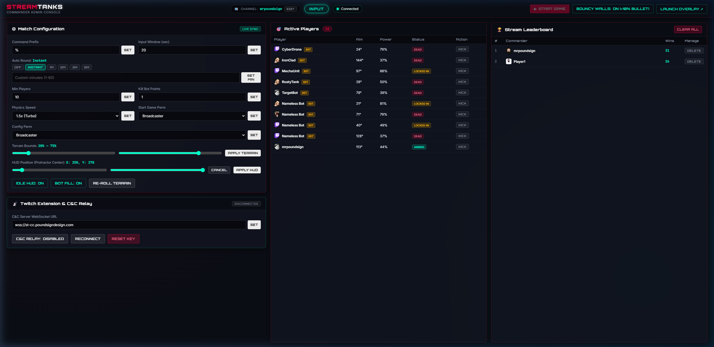
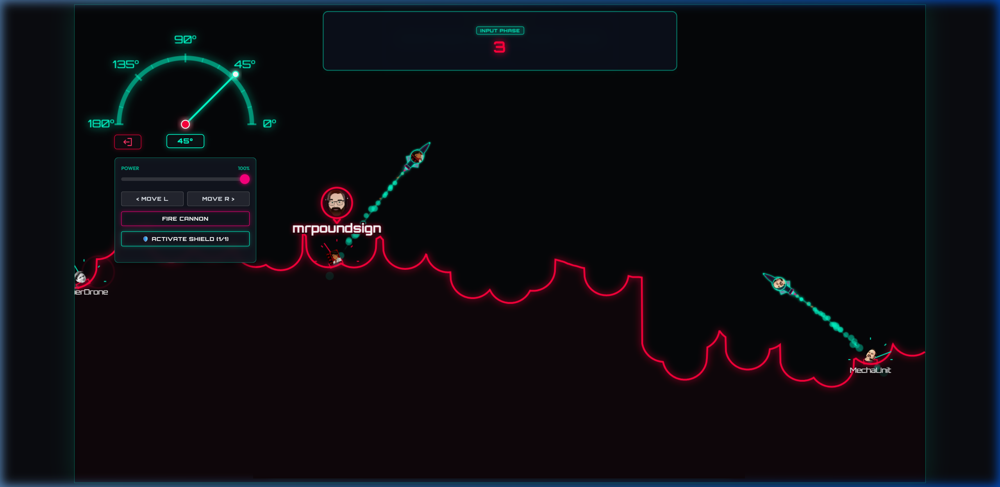
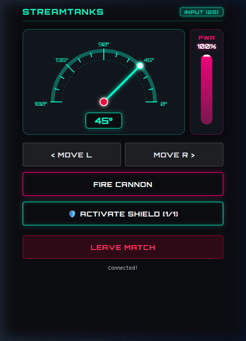

Stream viewers join directly through chat, deploy custom emote tanks crowned with their favorite emotes, lock in trajectory angles, blast craters through dynamic destructible terrain, and battle for the stream leaderboard!

Whether you are broadcasting the artillery match to your channel or aiming cannons from chat, we have a dedicated manual tailored for you.
Learn how to download and run StreamTanks, configure the transparent OBS Studio browser source, authorize your channel, and master the Commander Admin Console.
Zero install needed! Learn how to parachute into the battlefield with %join, master the 0°–180° aiming protractor, steal bounties, and use custom Twitch emote tanks.
Zero friction for your chat. Zero complex server setup for you. Download a single file, run it, paste the URL into OBS, and start playing.
Dynamic heightmaps deform in real time with spherical crater physics. Tanks tumble down craters, shells carve out hills, and no two rounds ever look or play the same.
Viewers don't need external apps or third-party logins. Simple chat commands like %join, %fire 45 60, and %left let anyone participate immediately.
Viewers choose their favorite Twitch channel emotes to crown their custom emote tanks. Tank preferences automatically save in SQLite so their avatar stays ready every match.
Victories are tracked permanently in an embedded SQLite database. Top commanders are celebrated on the stream leaderboard during idle countdowns with glorious emote showers.
Matches always stay exciting with configurable AI bot fills. Streamers can customize minimum player thresholds, bot rosters, and point bounties for destroying bots.
Dedicated web control dashboard at /admin. Monitor round telemetry, kick unruly players, trigger automated rounds, and run console commands with command history.
Click any screenshot below to inspect the neon visuals, destructible craters, and extension interface in high resolution.



No need to type chat commands or memorize angles. The upcoming StreamTanks Controller extension for Twitch embeds directly over your stream on Desktop and Mobile, providing tactile, zero-latency aiming controls.


Drag the neon dial directly on screen to set your cannon angle with sub-degree precision from 0° to 180°.
Smooth 1% to 100% power slider to fine-tune your shot distance before the input timer expires.
Activate your tactical energy shield once per match to protect your tank from incoming blasts and falling debris.
Seamless touch dial and buttons for viewers watching from the official Twitch mobile app on iOS and Android.
Yes! StreamTanks is 100% free and open-source software licensed under the GNU Affero General Public License v3.0 (AGPL-3.0).
No. StreamTanks is a single compiled Go binary with an embedded SQLite database engine. There are zero external dependencies or database daemons to configure.
Launch StreamTanks with the -debug flag. This enables an on-screen debug bar at the bottom of the overlay and spawns a target bot so you can test firing immediately.
The frontend overlay automatically detects disconnects, becomes completely transparent so your stream never shows a broken browser page, continuously polls, and reloads automatically once the server is back up.